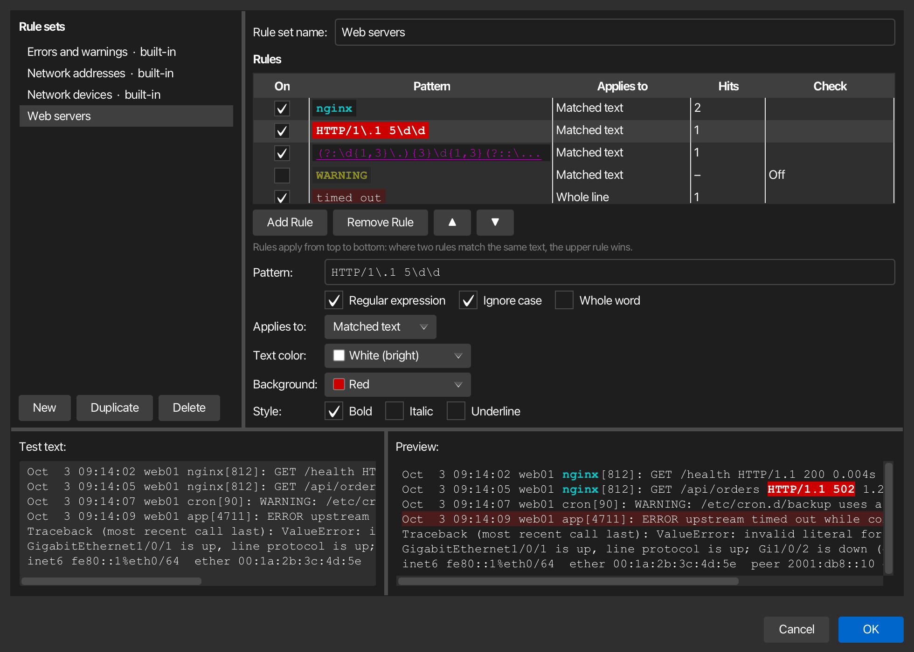

Keyword highlighting¶
korTTY can color words and patterns in terminal output as it arrives — errors in red, warnings underlined, IP and MAC addresses, interface names and link states on network devices — so the lines that matter stand out while output scrolls by. Highlighting only changes how the text looks: what the server sent, what you copy, the terminal log and what the AI features read stay exactly the same.
Highlighting is off until you switch it on, for one pane with a menu or the shortcut, for every terminal of a connection with the connection's rule set, or for every pane with a default rule set. Each terminal pane shows at most one rule set at a time. korTTY ships three built-in sets, and you can create your own.
Built-in rule sets¶
| Rule set | What it marks |
|---|---|
| Errors and warnings | error, failed, failure, fatal, critical, denied, refused, panic, exception, traceback and segmentation fault in bold red; exception class names such as NullPointerException or ValueError in red; warning, deprecated and timed out underlined in yellow. Words match whole and in any case, so ERROR: is marked but terror is not. |
| Network addresses | IPv4 addresses with an optional prefix length (10.0.0.1/24), IPv6 addresses including compressed forms (fe80::1%eth0), and MAC addresses with colons, dashes or in Cisco's dotted form (aabb.ccdd.eeff), all underlined. Numbers that only look like an address, such as 999.1.1.1, are left alone. |
| Network devices | Link and session states on switches and routers: down, err-disabled, notconnect, administratively down, inactive and similar in bold red, up, connected, established and forwarding in bold green, and interface names as Cisco, Arista and Juniper print them (Gi0/1, TenGigabitEthernet1/0/1, Eth1/2, xe-0/0/0, ae0) underlined in cyan. |
The built-in sets use the theme's ANSI colors, so they follow your color settings and the colors of each connection. Every rule also makes its text bold or underlined, so a match still stands out for color-blind users and in a monochrome theme.

Switching highlighting on and off¶
Highlighting works per pane: in a split tab every pane can show a different set, and a new split takes over a set chosen for the pane it was split from; without such a choice it follows its own connection.
- Keyboard: Ctrl+Shift+H (Cmd+Shift+H on macOS) switches highlighting on or off for the pane that has the keyboard focus. Switching it back on brings back the set that pane showed last; a pane that never showed one starts with its connection's rule set or the default rule set, or with Errors and warnings when there is neither. The status bar names the set that is now on.
- View → Highlighting: Highlighting On does the same as the shortcut. Below it, pick None or a rule set for the focused pane of the active tab.
- Terminal context menu: right-click a pane and open Highlighting for the same entries, applied to the pane you clicked. The submenu is there even when terminal effects are switched off.
Both menus list your own rule sets below the built-in ones and end with Manage Rule Sets…, which opens the rule-set editor on the set the pane shows.
Note
A set you choose in these menus or with the shortcut applies to the running session only and is not saved: the next tab you open for the same connection starts with the connection's rule set or, if it has none, the default rule set, which is None unless you chose one in the settings. To keep a set for a connection, choose it in the connection editor. This differs from View → Terminal Effect, which stores the effect on the connection.
The shortcut also works while the menu bar is hidden and in terminal-only fullscreen. On Windows and Linux korTTY keeps Ctrl+Shift+H for itself, so it does not reach the program in the terminal; plain Ctrl+H still reaches the shell as backspace.
Default rule set and settings¶
The Keyword highlighting section of Configuration → Global Settings → Terminal holds three settings that apply to every pane; see Terminal settings for the details.
| Setting | Default | What it does |
|---|---|---|
| Highlight keywords in terminal output | On | The master switch. Off means no pane is highlighted, whatever was chosen anywhere; the highlighting menus are greyed out and the shortcut only shows a note in the status bar. |
| Also highlight in full-screen programs (vim, less, htop) | Off | Highlights inside programs that use the alternate screen as well. |
| Default rule set | None | The set every pane shows unless its connection or the pane has a set of its own. Choose a set here to have highlighting on in every new and open terminal. |
A pane shows the first of these that applies:
- the set chosen for that pane in a menu or with the shortcut, including None;
- the connection's rule set, including None;
- the default rule set;
- no highlighting.
A rule set that no longer exists is skipped, so the next level decides. Saving the settings moves every open pane to the set it now resolves to, so a new default appears at once in every pane whose connection and pane have no choice of their own.
Rule set per connection¶
A connection can have a rule set of its own, for example Network devices for your switches and routers and Errors and warnings for application servers. Open the connection in the Connection Manager, switch to the Terminal Settings tab and pick the set under Keyword highlighting in the Terminal behavior section:
| Choice | What the connection's terminals show |
|---|---|
| Use the default (…) | The default rule set; the entry names the set the default shows now. New and existing connections start with this choice. |
| None (no highlighting for this connection) | No highlighting, whatever the default rule set is. |
| A built-in set or one of your own | That set, in every pane of the connection. |
- The section applies whether or not the connection uses its own terminal settings, and it stays when terminal effects are switched off. While the master switch in Settings → Terminal is off, the section says so and no set shows.
- Saving in the Connection Manager moves the open panes of that connection, in every window, to the new set at once. A pane with a set chosen in a menu or with the shortcut keeps that choice until you change it there.
- Tabs opened from the saved connection through Quick Connect, Duplicate or a project use its set. A pane opened with Split Right (new connection) or Split Down (new connection) follows the connection it was opened to, unless it took over a set chosen for the pane it was split from.
- The choice is stored with the connection in
connections.xmland survives duplicating, exporting and importing; an export carries only the id of the set, never its rules. A set that no longer exists — because you deleted it, or because the connection was exported on another computer or comes from a shared teamwork file — is shown as Missing rule set in the dropdown, and the connection's panes follow the default rule set until you pick another one. The built-in sets have the same id on every computer.
Your own rule sets¶
The rule-set editor creates and changes your own rule sets. Open it with View → Highlighting → Manage Rule Sets…, with Manage Rule Sets… in a pane's Highlighting context submenu, or with Edit Rules… next to the default rule set in Configuration → Global Settings → Terminal.

- Rule sets on the left lists the built-in sets, marked built-in, and then yours. The built-in sets are read-only, but you can select one to read its patterns. Duplicate copies the selected set, built-in or your own, into a new set you can change; New starts an empty set with one rule to fill in, and Delete removes one of your sets.
- Rule set name is the name the menus and the default rule set dropdown show.
- Rules lists the set's rules in priority order: where two rules match the same text, the upper rule wins, as in the built-in sets. Use ▲ and ▼ to change the order, Add Rule to add a rule below the selected one and Remove Rule to delete it. On switches a rule off without deleting it. Pattern shows each pattern in the look it gives, Applies to whether it colors the matched text or the whole line, Hits how many places it highlights in the test text below, and Check whether something is wrong with it.
- Below the table you edit the selected rule. Pattern is a word or phrase to find, or a Java regular expression when Regular expression is on. Ignore case matches upper and lower case alike, and Whole word only matches where the hit is not part of a longer word, so
errormarksERROR:but notterror. Applies to colors either the Matched text or the Whole line, soft-wrapped rows included. - Text color and Background are Unchanged (the program's own color), one of the 16 theme colors, or Custom with a color picker. Theme colors follow your color settings and the colors of each connection, like the built-in sets; a custom color stays the same everywhere. Style adds Bold, Italic or Underline. A rule needs at least one color or style.
The Test text at the bottom starts with sample log and network-device lines; replace it with output of your own. Preview shows it the way a terminal pane would, using the same matching, the same rule order and the same time limit, and it follows every change as you type. The editor keeps your test text until korTTY quits; it is not saved.
Check says Invalid for a rule that cannot work, Off for a rule you switched off, Slow for a rule that needed more than half of its time limit on a line of the test text, and Too slow for a rule that ran out of time there and highlights nothing on that line; a terminal pane switches such a rule off once it has run out of time on three lines (see Limits). Hover over the word, or select the rule, for the explanation. While any rule or set has a problem, OK is disabled and the line above the buttons names the first one, for example a missing pattern, a regular expression that does not compile, or a pattern such as a* that also matches empty text.
OK saves your rule sets to global-settings.xml at once and moves every open pane to its updated set; Cancel discards all changes. Deleting the set that is your default rule set sets the default back to None. A pane that showed a deleted set falls back to the next level: its connection's rule set, else the default rule set.
Tip
To adapt a built-in set, select it, click Duplicate and change the copy. The built-in sets themselves stay as korTTY ships them, so a later version can improve their patterns.
How highlighting behaves¶
- New output is highlighted a moment after it appears (about 50 ms), on a background thread, so a fast
cator a log tail keeps its speed. - A match can continue across a soft-wrapped line, and patterns match wide characters such as CJK text and emoji.
- Choosing another set, or None, re-colors the screen at once and the scrollback progressively, newest lines first. None restores the original colors everywhere.
- Full-screen programs such as
vim,lessandhtopare not highlighted unless you allow it in the settings: they redraw constantly and bring their own colors, so highlights would flicker and fight them. - When output floods in faster than it can be checked, lines more than 10,000 rows above the bottom are left as they are.
- Text a program marks as concealed stays hidden, and links keep their own style.
- Highlights also show on connections whose terminal colors are switched off, and they appear in terminal recordings, because they are part of what the pane shows.
- While the find bar shows results, korTTY waits with re-coloring the scrollback after you switch sets, so the matches you are looking at stay marked. A line that is highlighted while the find bar is open can lose its find mark; search again to bring it back.
Limits¶
Each rule gets at most 2 ms per line of output. A rule that runs out of time three times — usually a regular expression that backtracks badly — is switched off for that pane until you choose a set again. A line, soft-wrapped rows included, is checked up to its first 8,192 characters. The editor's Check column warns about slow rules before they reach a terminal.
You can create up to 32 rule sets with up to 64 rules each, and a pattern can be up to 512 characters long.
Security and privacy¶
Warning
A highlight is not a trust signal. The server decides what it prints, so it can print text that matches a rule, just as it can color its own output. Highlighting never changes what is sent or received.
Rule sets stay on your computer, in global-settings.xml (see Configuration files), and the log names rules and sets by their ids only, never by their patterns or by the text they matched. If you allowed anonymous usage statistics, korTTY reports which built-in set was switched on (any set of your own counts only as "custom") and whether that happened from a menu, with the shortcut, through the connection's rule set or through the default rule set, and which of the three settings you changed, with the default rule set again reported only as a built-in set, "custom" or "none" — never patterns, set names or terminal text.